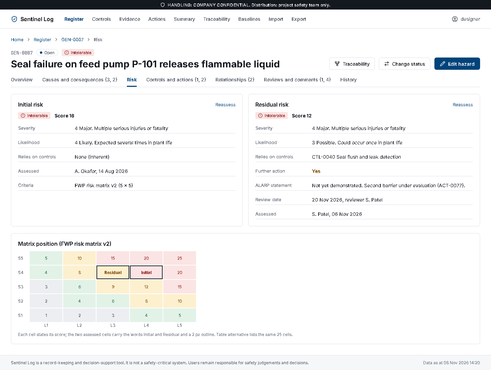

Assess risk
- Open the sample hazard risk tab; page shows initial assessment S4xL3 with score and category. See Figure 1.

Figure 1. Risk tab on hazard detail - Open the residual assessment; page shows S3xL2 with score and category from the same criteria version.
- Residual assessment names the implemented control under the controls it relies on.
- Residual assessment shows review date, reviewer, further-action state, and ALARP statement.
- Open the Record initial assessment for the sample hazard; Sentinel Log refuses a second initial assessment and keeps the original row.